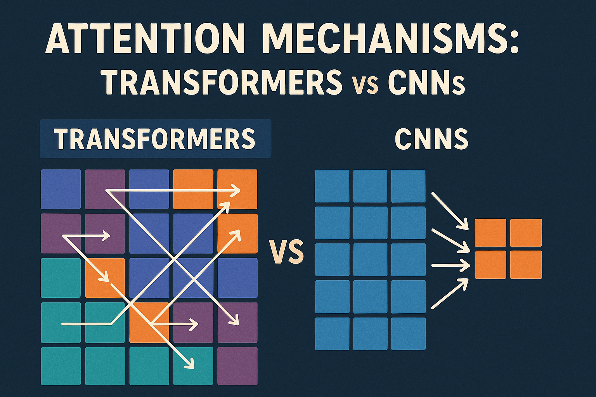

Attention Mechanisms: Transformers vs Convolutional Neural Networks

Introduction
Attention mechanisms have revolutionized deep learning by enabling models to focus on relevant parts of the input data. While originally popularized in Transformers, attention has also been successfully integrated into Convolutional Neural Networks (CNNs). This article explores the fundamental differences, applications, and trade-offs between attention mechanisms in these two architectural paradigms.
Attention in Transformers
Core Concept
The attention mechanism in Transformers is based on the concept of self-attention or scaled dot-product attention. The fundamental idea is to allow each position in a sequence to attend to all positions in both the input and output sequences.
Mathematical Foundation
The attention mechanism in Transformers computes attention weights using three key components:
- Query (Q): What information we’re looking for
- Key (K): What information is available
- Value (V): The actual information content
The attention score is calculated as:
\[ \text{Attention}(Q, K, V) = \text{softmax}\left( \frac{QK^T}{\sqrt{d_k}} \right)V \]
Where d_k is the dimension of the key vectors, used for scaling to prevent the softmax function from having extremely small gradients.
Multi-Head Attention
Transformers employ multi-head attention, which runs multiple attention mechanisms in parallel:
\[ \text{MultiHead}(Q, K, V) = \text{Concat}(\text{head}_1, \ldots, \text{head}_h) W^O \]
Where each \(\text{head}_i = \text{Attention}(QW_i^Q, KW_i^K, VW_i^V)\)
This allows the model to attend to information from different representation subspaces simultaneously.
Key Characteristics
- Global Context: Every token can attend to every other token in the sequence
- Position Agnostic: Inherently permutation-invariant (requires positional encoding)
- Parallel Processing: All attention computations can be performed simultaneously
- Quadratic Complexity: O(n²) memory and computational complexity with sequence length
- Dynamic Weights: Attention weights are computed dynamically based on input content
Applications
- Natural Language Processing (BERT, GPT, T5)
- Computer Vision (Vision Transformer - ViT)
- Multimodal tasks (CLIP, DALL-E)
- Time series analysis
- Graph neural networks
Attention in Convolutional Neural Networks
Core Concept
Attention in CNNs is typically implemented as channel attention or spatial attention mechanisms that help the network focus on important features or spatial locations. Unlike Transformers, CNN attention is usually applied to feature maps rather than sequence elements.
Types of CNN Attention
1. Channel Attention (SE-Net, ECA-Net)
Channel attention mechanisms adaptively recalibrate channel-wise feature responses by modeling interdependencies between channels.
Squeeze-and-Excitation (SE) Block:
- Global Average Pooling: \(z_c = \frac{1}{H \times W} \sum \sum u_c(i,j)\)
- Excitation: \(s = \sigma(W_2 \, \delta(W_1 z))\)
- Scale: \(\tilde{x}_c = s_c \times u_c\)
2. Spatial Attention (CBAM, SAM)
Spatial attention focuses on “where” informative parts are located in the feature map.
Spatial Attention Module:
- Channel-wise statistics: \(F_{\text{avg}},\ F_{\text{max}}\)
- Convolution: \(M_s = \sigma(\text{conv}([F_{\text{avg}}; F_{\text{max}}]))\)
- Element-wise multiplication: \(F' = M_s \otimes F\)
3. Self-Attention in CNNs (Non-Local Networks)
Some CNNs incorporate self-attention mechanisms similar to Transformers but adapted for spatial data:
\[ y_i = \frac{1}{C(x)} \sum_j f(x_i, x_j) \, g(x_j) \]
Where f computes affinity between positions i and j, and g computes representation of input at position j.
Key Characteristics
- Local and Global Context: Can focus on both local patterns and global dependencies
- Spatial Awareness: Naturally preserves spatial relationships in 2D/3D data
- Efficient Computation: Generally more computationally efficient than Transformer attention
- Feature Enhancement: Primarily used to enhance existing convolutional features
- Lightweight: Usually adds minimal parameters to the base model
Applications
- Image classification (ResNet + SE, EfficientNet)
- Object detection (Feature Pyramid Networks with attention)
- Semantic segmentation (attention-based skip connections)
- Medical image analysis
- Video understanding
Comparative Analysis
Computational Complexity
| Aspect | Transformer Attention | CNN Attention |
|---|---|---|
| Time Complexity | O(n²d) for sequence length n | O(HWd) for spatial dimensions H×W |
| Space Complexity | O(n²) attention matrix | O(HW) or O(d) depending on type |
| Scalability | Challenging for long sequences | Scales well with image resolution |
Architectural Differences
Information Flow
- Transformers: Global information exchange from the start
- CNNs: Hierarchical feature learning with attention refinement
Inductive Biases
- Transformers: Minimal inductive bias, relies on data and scale
- CNNs: Strong spatial inductive bias through convolution operations
Interpretability
- Transformers: Attention weights provide interpretable focus patterns
- CNNs: Channel/spatial attention maps show feature importance
Performance Characteristics
Data Efficiency
- Transformers: Require large datasets to learn effectively
- CNNs: More data-efficient due to built-in inductive biases
Generalization
- Transformers: Excel at capturing long-range dependencies
- CNNs: Better at learning local patterns and spatial hierarchies
Training Stability
- Transformers: Can be unstable, require careful initialization and learning rates
- CNNs: Generally more stable training dynamics
Hybrid Approaches
Recent research has explored combining both attention mechanisms:
ConvNets with Transformer Blocks
- ConvNeXt: Modernized CNNs inspired by Transformer design principles
- CoAtNet: Combines convolution and self-attention in a unified architecture
Vision Transformers with Convolutional Elements
- CvT: Convolutional Vision Transformer with convolutional token embedding
- CeiT: Incorporating convolutional inductive bias into ViTs
Advantages of Hybrid Models
- Best of Both Worlds: Local pattern recognition + global context modeling
- Improved Efficiency: Reduced computational complexity while maintaining performance
- Better Inductive Bias: Combines spatial awareness with flexible attention
Use Case Recommendations
Choose Transformer Attention When:
- Working with sequential data (NLP, time series)
- Need to model long-range dependencies
- Have access to large datasets
- Computational resources are abundant
- Interpretability of attention patterns is important
Choose CNN Attention When:
- Working with spatial data (images, videos)
- Limited computational resources
- Smaller datasets available
- Need faster inference times
- Spatial relationships are crucial for the task
Consider Hybrid Approaches When:
- Working with complex visual tasks requiring both local and global understanding
- Need to balance performance and efficiency
- Have moderate computational resources
- Want to leverage benefits of both paradigms
Future Directions
The field continues to evolve with several promising directions:
- Efficient Attention: Linear attention mechanisms for Transformers
- Dynamic Attention: Adaptive attention mechanisms that adjust based on input complexity
- Cross-Modal Attention: Attention mechanisms that work across different data modalities
- Learnable Attention Patterns: Meta-learning approaches for attention mechanism design
- Hardware-Optimized Attention: Attention mechanisms designed for specific hardware accelerators
Conclusion
Both Transformer and CNN attention mechanisms serve distinct but complementary purposes in modern deep learning. Transformer attention excels at modeling global dependencies and complex relationships in sequential data, while CNN attention provides efficient feature enhancement for spatial data. The choice between them depends on specific use case requirements, available resources, and the nature of the data being processed.
The ongoing convergence of these approaches through hybrid architectures suggests that the future of attention mechanisms lies not in choosing one over the other, but in thoughtfully combining their strengths to create more powerful and efficient models. As the field continues to advance, we can expect to see more sophisticated attention mechanisms that bridge the gap between these two paradigms while addressing their respective limitations.